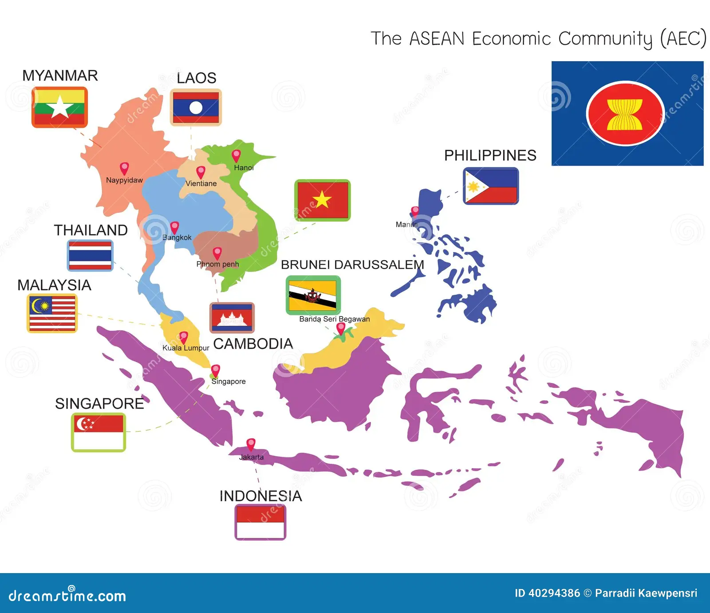

Interactive ASEAN Biodiversity Map
Click Country Flags on the Map
Klik langsung pada bendera negara di dalam peta wilayah ASEAN di bawah ini untuk melihat daftar lengkap flora dan fauna endemiknya.

🇲🇲 MYANMAR
Click to View
🇱🇦 LAOS
Click to View
🇹🇭 THAILAND
Click to View
🇻🇳 VIETNAM
Click to View
🇰🇭 CAMBODIA
Click to View
🇲🇾 MALAYSIA
Click to View
🇧🇳 BRUNEI
Click to View
🇸🇬 SINGAPORE
Click to View
🇵🇭 PHILIPPINES
Click to View
🇮🇩 INDONESIA
Click to View